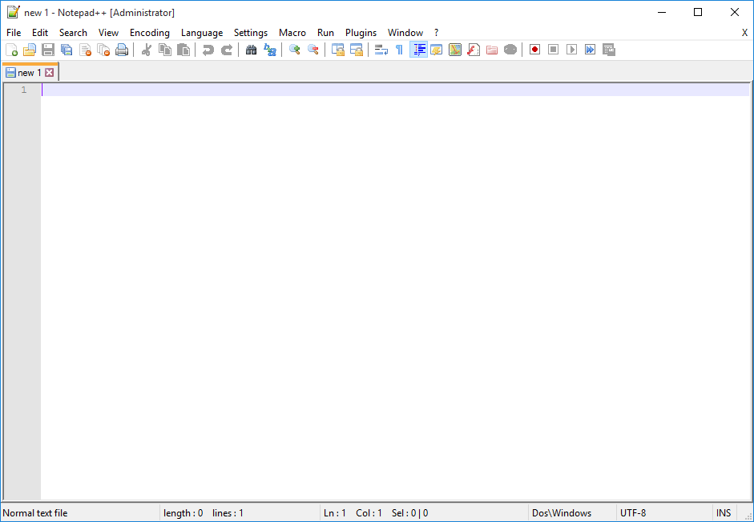
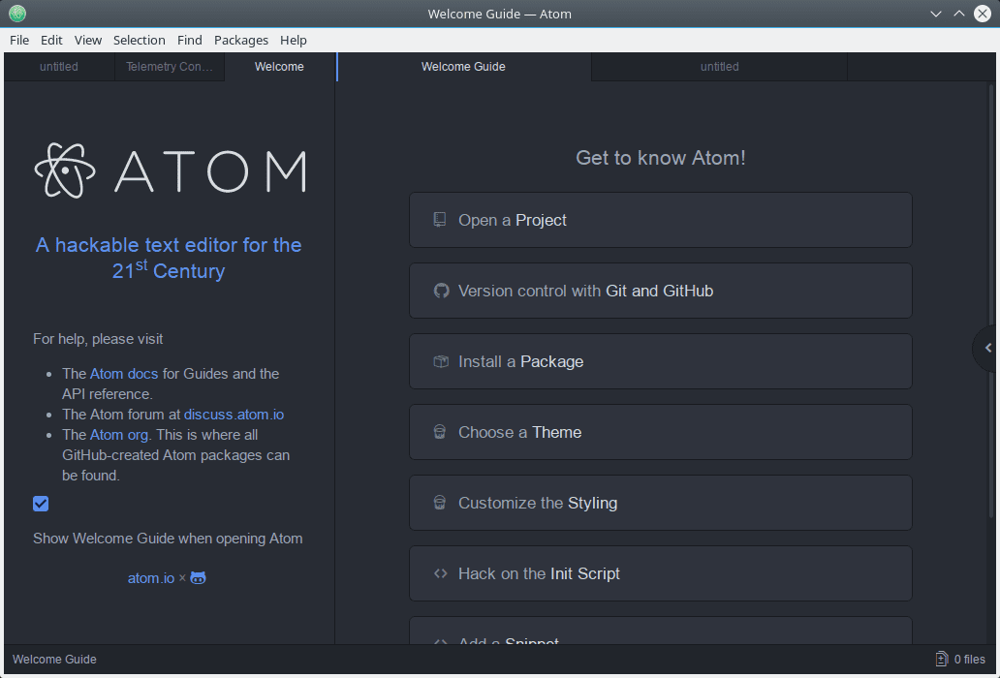
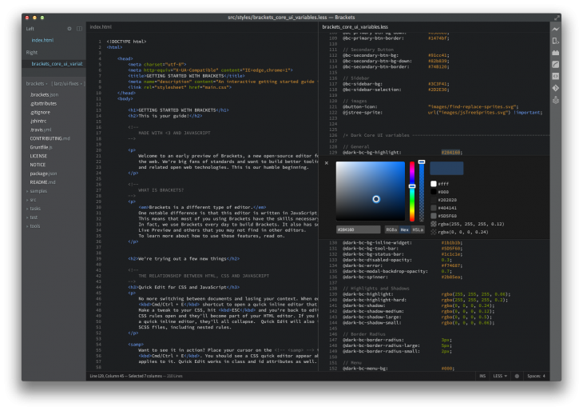
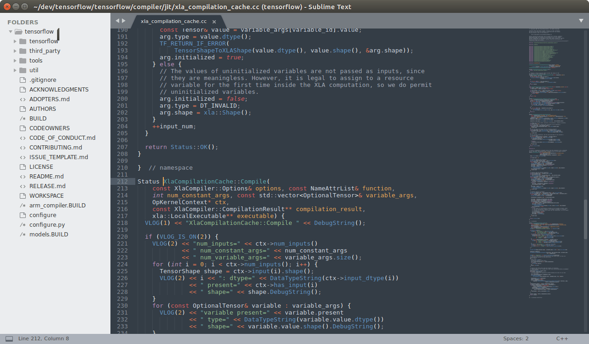
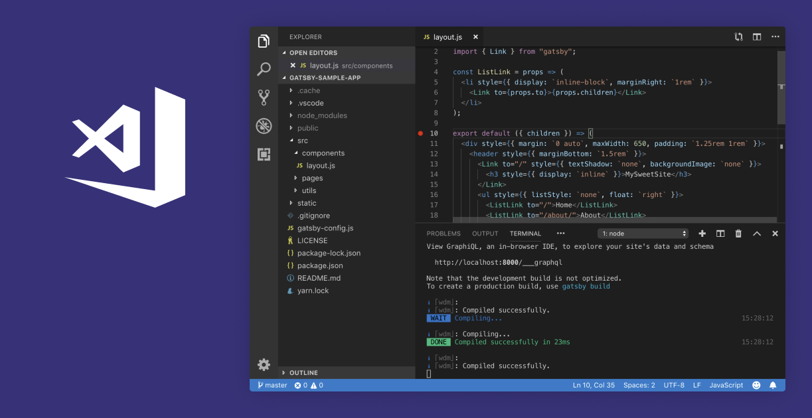

Beberapa Teks Editor Terpopuler untuk Para Programmer
Sumber : https://glints.com/id/lowongan/text-editor-untuk-programer/
Mei 17,2019 | No Comments
Teks Editor menjadi perangkat lunak yang digunakan oleh seorang programmer dalam menulis sebuah kode program. Pada umumnya, beberapa text editor hanya mempunyai fungsi untuk menulis kode program yang diinginkan tanpa disertai alat yang mendukung adanya integrasi.
Nah, teks Editor memiliki macam-macam fitur. Umumnya, mereka memiliki fitur syntax highlighting, search dan replace syntax, code folding, line number, line marking, snippet, dan lainnya. Selain fitur, teks editor juga memiliki penampilan yang berbeda-beda yang disesuaikan oleh karakter-karakter programmer untuk menulis sebuah kode.
Teks editor lazim digunakan saat komputer dengan monitor berkembang pesat di pasaran. Perkembangan mereka makin cepat saat dua raksasa teknologi, Microsoft dan Apple, sama-sama mengembangkan text editor untuk masing-masing produk, yakni Notepad dan TextEdit.
Berikut adalah Teks Editor populer yang banyak digunakan oleh Programmer :
1. NotePad++

sumber : commons.wikimedia.org
Notepad++ adalah sebuah text editor dan source code editor yang berjalan di sistem operasi Microsoft Windows. Notepad++ menggunakan komponen bernama Scintilla untuk dapat menampilkan dan juga menyunting teks serta berkas kode sumber ke dalam berbagai bahasa pemrograman.
Notepad ++ memiliki fitur tab, sehingga membuat penggunanya bisa melakukan perubahan kode dengan memasukkan banyak file dalam satu jendela yang sama. Selain itu, perangkat lunak ini sangat ringan dan amat mudah digunakan. Kemudahan Notepad ++ sebagai text editor semakin tak diragukan setelah terintegrasi dengan protokol jaringan http.
Jika melihat Notepad ++ versi 4.7.2, mereka mendukung hampir semua bahasa pemrograman yang populer, seperti C++, JavaScript, PHP, dan SQL. Hal ini lantas membuat Notepad ++ jadi kesukaan banyak programmer untuk menulis atau menyunting kode program.
2. Atom

sumber : ghacks.net
Atom adalah text editor yang berbasiskan free dan open-source. Text editor ini mampu digunakan untuk macOS, Linux, dan Microsoft Windows. Text editor ini menggunakan Node.js dalam pembuatan setiap plugin dan fitur dan dikembangkan oleh aplikasi berbasis website, GitHub.
Sejak dikenalkan pada 2014 lewat slogan free open-source, Atom menjadi amat populer. Hampir seluruh developer di dunia menggunakan Atom untuk melakukan perubahan koding. Selain itu, Atom juga mampu melakukan syntax highlighting dalam banyak bahasa pemrograman.
Hal terakhir yang membuat Atom banyak digunakan adalah adanya fitur kostumisasi tema. Pengguna Atom tidak hanya bebas memilih tema, tapi juga mampu mencari yang diinginkan dengan kriteria karena banyaknya tema yang disediakan oleh Atom.
3. Brackets

sumber : thenextweb.com
Brackets adalah text editor dengan fokus utama pada pengembangan web. Dibuat oleh Adobe Systems, mereka adalah perangkat lunak berbasis free dan open source yang berada di bawah MIT License. Untuk saat ini mereka dikembangkan melalui GitHub oleh Adobe untuk macOS, Windows, dan beberapa kelas Linux.
Salah satu fitur andalan Brackets adalah live preview, yang memungkinkan untuk melihat perubahan pada CSS dan HTML di layar pengguna secara langsung. Selain itu, mereka juga memiliki fungsi untuk melihat dimana seharusnya CSS selector digunakan untuk melakukan perubahan atau penambahan tampilan.
Fitur lain yang menjadi keunggulan Brackets adalah kemampuannya untuk mengambil dan juga membaca file PSD buatan Adobe Photoshop dan menampilkannya dalam file CSS. Hal ini tentu menjadi keuntungan bagi para web designer dan kemudian membuat mereka menjadikan Brackets text editor favorit.
4. Sublime Text

sumber : sublimetext.com
Sublime menjadi salah satu text editor terbaik untuk melakukan perubahan pada bahasa pemrograman. Selain ringan dan mudah digunakan, mereka tersedia bisa dipakai untuk banyak bahasa pemrograman dan tersedia pada tiga sistem operasi terbesar, yaitu Windows, Linux, dan macOS.
Bagi para programmer, Sublime dipilih karena memiliki tampilan antarmuka yang simpel dan tidak terlalu banyak aturan. Selain itu, mereka juga memberikan banyak fitur berupa plugin-plugin dan pratinjau melalui sebuah kotak simpel yang terletak di sisi layar pengguna.
Meski demikian, di balik keunggulannya, Sublime juga dinilai tak terlalu meyakinkan. Sebagai text editor, mereka tidak gratis. Kekurangan Sublime tidak hanya itu saja, mereka juga jarang di-update oleh pengembang, Jon Skinner, Will Bond. Sublime versi yang paling terkini saja bahkan sudah berusia 10 tahun.
4. Visual Studio Code

sumber : code.visualstudio.com
Visual Studio Code adalah text editor yang dikembangkan oleh Microsoft untuk Windows, Linux dan macOS. Visual Studio Code mampu digunakan untuk debugging, Git control, syntax highlighting, intelligent code completion, snippets, and code refactoring. Visual Studio Code juga mampu dikostumisasi oleh pengguna.
Seperti halnya Notepad ++, bahwa Visual Studio Code juga didukung dengan berbagai jenis bahasa pemrograman seperti Java, JavaScript, PHP, C++, C#, JSON, dan Go. Hal tersebut lantas membuat perangkat lunak ini bisa mengidentifikasi jenis bahasa pemrograman secara otomatis.
Meski demikian, banyak fitur milik Visual Studio Code yang tidak terekspos melalui menu atau layar antarmuka para penggunanya. Sebaliknya, fitur tersebut hanya mampu diakses melalui palet perintah atau melalui file .json yang mampu mengubah preferensi penggunaan.